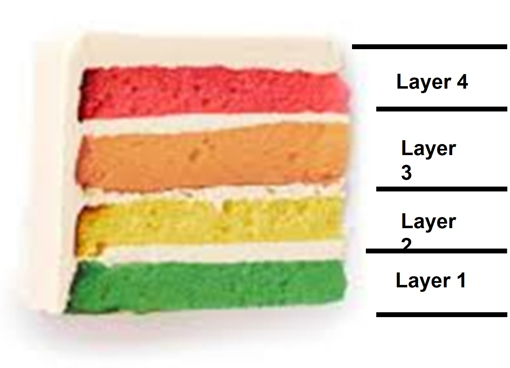

Security Threats in Digtial twins
Digtial Twins
Decarbonising the energy system by 2050 presents multiple dilemmas between national security, affordability, public support, and health. What if we could model these dilemmas and better anticipate sociotechnical impacts of building a new nuclear station, installation of solar panels on every roof, or a change in energy tariffs? Digital twins – advanced virtual representations of social and physical processes and objects – promise to achieve that. However, as digital twins are still in the ‘demonstrator’ stage, many questions arise with regards to data accuracy, security, and, most importantly, ethical foundations of claims made by models which have significant implications for democratic decision-making.
Digital twins, simulations and advanced modelling facilities promise to provide accurate data-driven representations of complex socio-technical entities, for example energy systems (Energy Systems Catapult, 2022). However, we shouldn’t take these possibilities for granted. Social science research on the philosophy of computer modelling and test beds has demonstrated their performative characteristics (i.e., the power of models to produce and influence reality as they lead to political action and scholarly debates; MacKenzie, 2005) as well the risk of instrumentalising the facilities for market gains (Laurent et al., 2021).
We, therefore, need to understand the kinds of energy futures that are ‘in the making’ thanks to the advancements in DT and simulations. Who are the experts, collaborations, and datasets behind the models? Understanding the socio-technical dimensions of expertise contributing towards representations of energy futures is vital for ensuring the simulated futures and associated political decisions are democratic, equitable and sustainable.
Previous literature on social studies of modelling investigated smart city test beds or geoengineering experimentation as case studies (Halpern et al. 2013; Stilgoe, 2015). However, the unprecedented level of complexity and intertwinement between social and technical domains calls for a renewed attention toward the promises, challenges, and epistemologies of scientific simulation.
The recent advancements in computational modelling and open data require a socio-technica inquiry. For example, organisational ethnography (Neyland, 2007) which incorporate field visits, interviews, and shadowing sessions, could sched a light on day to day working practices of collaboration and conflict resolution. Similarly, Focus groups and workshops could be useful for knowledge exchange and agenda-setting purposes. The approach draws on the long tradition of ‘science studies’ (Woolgar and Latour, 1988; Michalec et al., 2021), where the production of scientific and technical knowledge is understood as cultural practice (Seaver, 2017). This means the digital twins’ research agenda is influenced by the political landscape, funding priorities, collaborations mobilised, and enthusiasm generated among the lay publics. As digital twins enter more complex, socio-technical domains, we ought to understand how experts from different social worlds make claims to knowledge, i.e., their assumptions, long term motivations, tools they use.
Project 1 : Energy and Democracy in Digital Twins
Project 2 : Living in a simulation? Cybernetic promises and data challenges of digital twins to decarbonise energy systems
Digital Twins for cyber security
Introduction
Research notes by Suheyb Said Based on the chapter by Eckhart, M., & Ekelhart, A. (2019). Digital twins for cyber-physical systems security: State of the art and outlook. Security and Quality in Cyber-Physical Systems Engineering: With Forewords by Robert M. Lee and Tom Gilb, 383-412
Cyber-Physical Systems (CPSs) are crucial for Industry 4.0, blending physical and virtual components to automate and intelligently operate various sectors. However, CPSs can be vulnerable to cyber-attacks, posing threats to public safety.
To address CPS security challenges, researchers explore the concept of digital twins, which are virtual replicas of physical objects, that help monitor, visualize, and predict the state of cyber-physical systems. Digital twins offer promising security-enhancing use cases for CPSs. Digital twins could enhance the security of smart factories by spotting security flaws during the design phase and supporting security testing and intrusion detection throughout the system’s lifecycle. However, creating and maintaining digital twins efficiently remains a significant research challenge due to overhead costs. Despite this the full potential and research challenges of digital twins in information security require further exploration.
The digital twin: origin
The concept of digital twins has its origins in NASA’s Apollo program, where a twin of a spacecraft was created for training and mirroring flight conditions based on data from the operational spacecraft. Over time, digital twins have evolved from physical copies to virtual models of systems due to technological advancements in simulations and connectivity.
The term “digital twin” was coined by Shafto et al. (2010) and initially focused on mirroring the life of air vehicles. However, in 2013, Lee et al. introduced digital twins to the manufacturing sector, where they simulate physical counterparts based on physical models. This concept expanded to other areas, including health monitoring, systems engineering, and managing various phases of a system’s lifecycle.
The concept of digital twins has different interpretations, often leading to confusion among the stakeholders. Key requirements for digital twins include real-time data, integration, and fidelity to accurately mirror physical counterparts. While the adoption of high-fidelity simulations with real-time data integration is envisioned for the future, most of the current digital twins lack these features. Data integration, either from past lifecycles or real-time acquisition, is essential for creating virtual replicas. However, there is no consensus on the minimum level of data integration required. Industry professionals often view digital twins as simulation models of physical objects that may not receive data instantly or continuously.
Digital twin is a virtual replica of a system that accompanies its physical counterpart during phases of its lifecycle, consumes real-time and historical data if required, and has sufficient fidelity to allow the implementation of the desired security measure.
Use Cases of Digital Twins in the Manufacturing Domain
The digital twin concept finds various applications in the manufacturing domain throughout the lifecycle of Cyber-Physical Production Systems (CPPSs). In the engineering phase, digital twins are used to efficiently to design, test, and fabricate systems, utilising 2D/3D models and physical simulations.
During the operation phase, digital twins monitor the health of CPPSs in real-time, allowing for preventive/proper maintenance and process optimisation. In the end-of-life phase, digital twins retain knowledge about the system’s life for future reuse and assist in the proper disposal of materials. Overall, digital twins enhance efficiency, reduce downtime, and optimise the lifecycle management of CPPSs (Figure 1).
The digital thread
The digital thread involves linking data throughout various phases of a system’s lifecycle to increase efficiency in development and deployment. It enables an unbroken data link through the lifecycle and can be utilized to generate and provide updates to a digital twin. Semantic interoperability of tools used throughout the lifecycle is essential for implementing the digital thread.
While the digital thread can support digital twins and enhance the security of Cyber-Physical Systems (CPSs), it also represents an attractive target for attacks, as it contains valuable data. A compromised digital thread could lead to severe consequences, such as manipulated updates that put the digital twin into a malicious state. Therefore, implementing adequate security measures to protect each link within the digital thread is crucial.
Security Use Cases of Digital Twin
Digital twins can be utilised during the engineering phase to design more secure cyber-physical systems (CPSs). They can be combined with cyber ranges to simulate attacks and evaluate potential damages, leading to more robust and fault-tolerant CPS designs. Digital twins can also help reduce the attack surface by identifying weak spots and unused network services in the CPS specification. Furthermore, they enable testing security controls layer-by-layer, aiding in the implementation of a defence in depth strategy. Additionally, digital twins can be used to evaluate containment strategies for compromised devices, facilitating incident handling during the operation phase.
1. Intrusion detection
2. Detecting Hardware/software misconfigurations
3. Security Testing
4. Privacy
5. Training
6. Secure Decommissioning
7. Compliance
Security Threats in Digital Twins
Based on paper by Alcaraz, C., & Lopez, J. (2022). Digital twin: A comprehensive survey of security threats. IEEE Communications Surveys & Tutorials, 24(3), 1475-1503. Notes written by Suheyb Said
Digital Twins (DT) have 4 distinct layers with different functionalities. What is a layer? A layer is a distinct level or stage of functionality which make up the Digital Twin. Each layer has it’s on specific function, the layers are interconnected and are designed to work together cohesively. The layers make up the digital twin.

To better illustrate, think of a 4 layered cake. All the 4 layers interact with each other to make up the entire cake. This is the same concept in digital twins. The digital twin model has 4 distinct layers with different functionalities.
Digital twin layers in a nutshell
Layer 1 - Data Collection: This layer is like the foundation of the Digital Twin. It collects real-time data from sensors and devices attached to the real-world object. These sensors gather information about its status, performance, and other important aspects.
Layer 2 - Data Processing: Once the data is collected in Layer 1, it goes to Layer 2 for processing. Here, the collected data is organised, cleaned, and made ready for analysis. This layer ensures that the data is in good shape for the Digital Twin to work with.
Layer 3 - Model Building: In this layer, a digital model of the real-world object is created. It’s like building a virtual version of the object based on the collected data. This digital model allows us to understand and simulate how the real object behaves under different conditions.
Layer 4 - Visualization and Interaction: The final layer is like putting the finishing touches on the Digital Twin. It provides a way for users to see and interact with the virtual copy. You can visualize data, run simulations, and make decisions based on the insights gained from the Digital Twin.
Security of Digital Twins: attack classification
The overall attack surface is broad, with attackers potentially compromising the DT through physical or digital means. Digital attacks are associated with software, networks, and information systems, while physical attacks are related to access to endpoints and communication infrastructures.
In this section, security threats are classified and analysed according to the four layers of functionality. Ultimately, security threats impact operational requirements of DT such as availability, integrity, confidentiality, privacy, among the others. For example, if successful, attackers can extract information, exfiltrate sensitive data, or disrupt critical systems. Such attacks can be sophisticated, resembling Advanced Persistent Threats (APTs) seen in real-world cases like Stuxnet, BlackEnergy, ExPetr, or GreyEnergy.
| Layer 1 | Layer 2-3 | Layer 4 |
|---|---|---|
| Privilege Escalation | Exctraction of private information | Rogue HMIs |
| Denial of Service | Digital Twins service tampering | Visualisation tampering |
| Physical Attack | Man-in-the-middle attacks | N/A |
| N/A | Privacy leakage | N/A |
| N/A | Rogue vertical resources | N/A |
Layer 1 attacks
Privilege escalation- a security threat where attackers try to gain higher-level access to control systems (admin control). This happens due to weaknesses in security measures or outdated systems. In Digital Twin scenarios, similar attacks could disrupt the system, causing significant deviations in the virtual model.
Denial of Service (DoS) is an attack where bad actors overwhelm the devices used in the system, causing them to run out of resources and stop working. This disruption affects both the physical operations and the virtual simulations in the Digital Twin. The attackers can use various methods to achieve this, like flooding the system with too much data or selective blocking of important information. They can also coordinate with other malicious devices to create a powerful army of attackers. The goal of such attacks is to disrupt the functionality and communication of the Digital Twin system, which can have severe consequences on decision-making, monitoring, and control processes.
Physical Attack - Attackers are physically interacting with the infrastructure needed to produce Digital Twins. Examples of physical attacks can be theft or destruction to the devices used in the digital twin in environment, which can affect how the digital twin system can collect data. Security measures used to prevent this are typically CCTV, Security Alarms and access control (e.g., ID badges).
Layer 2-3 attacks (Both layers have similar attacks)
Extraction of private information - Attackers can steal sensitive data such as system dynamics, configurations, and security credentials. This enables cyber espionage (spying) which improves attack techniques.
Digital Twins (DT) service tampering - This attack relates to manipulating and tempering with the services of Digital Twins. For example, Digital Twin models can become desynchronised, leading to inconsistencies between the virtual and real-world models as data may be modified, hidden, etc. This can potentially lead to poor decision making from engineering as the digital twin model will be provided false insights.
Man-in-the-middle attacks: Attackers can intercept and manipulate information flowing between the Digital Twins and other components, which can alter databases, and present misleading information to end users. This can lead to poor decision making.
Privacy leakage: Accidental disclosure of information that exposes sensitive details which can happen as Digital Twin servers handle large volumes of private data. It’d important to implement robust security and privacy measures and encrypt sensitive data to prevent this from happening.
Rogue virtual resources- Insiders with privileged access can manipulate the servers hosting digital twin by inserting malicious virtual resources. The goal is so that they can control over a part of the digital twin model.
Layer 4 attacks
Rogue HMIs- Insiders with access rights to IT (information technology) and OT (operational technology) domains can insert authorised HMIs (Human Machine Interfaces) connected to the digital twins. Through these rogue attackers, other attackers can carry out malicious actions such as modifying data connected to the digital twins.
Visualization tampering: Attackers can modify digital twin services and can manipulate the final visualisation which can lead to incorrect decision making.